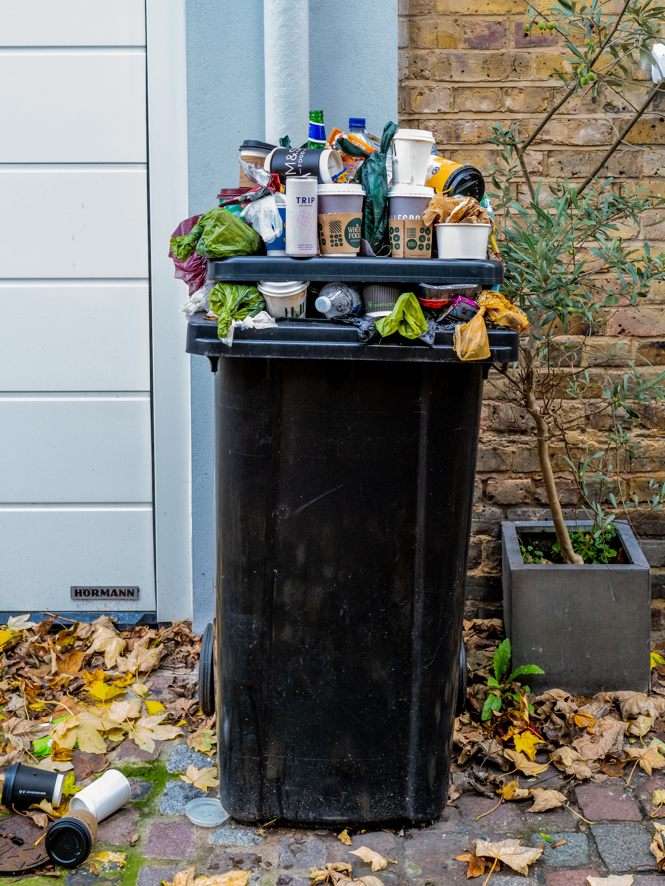

Save the earth1
- Reduce, Reuse, Recycle
- Conserve Energy
- Choose Sustainable Transportation
- Support Enviromental Initiatives
- Spread Awareness and Educate Others
There are several ways citizens can contribute to preventing enviromental pollution. Here are five effective ways
Practice responsible waste management by reducing consumption, reusing items, and recycling materials. This helps conserve resources and minimizes the amount of waste sent to landfills or incinerators.
And we should do it
